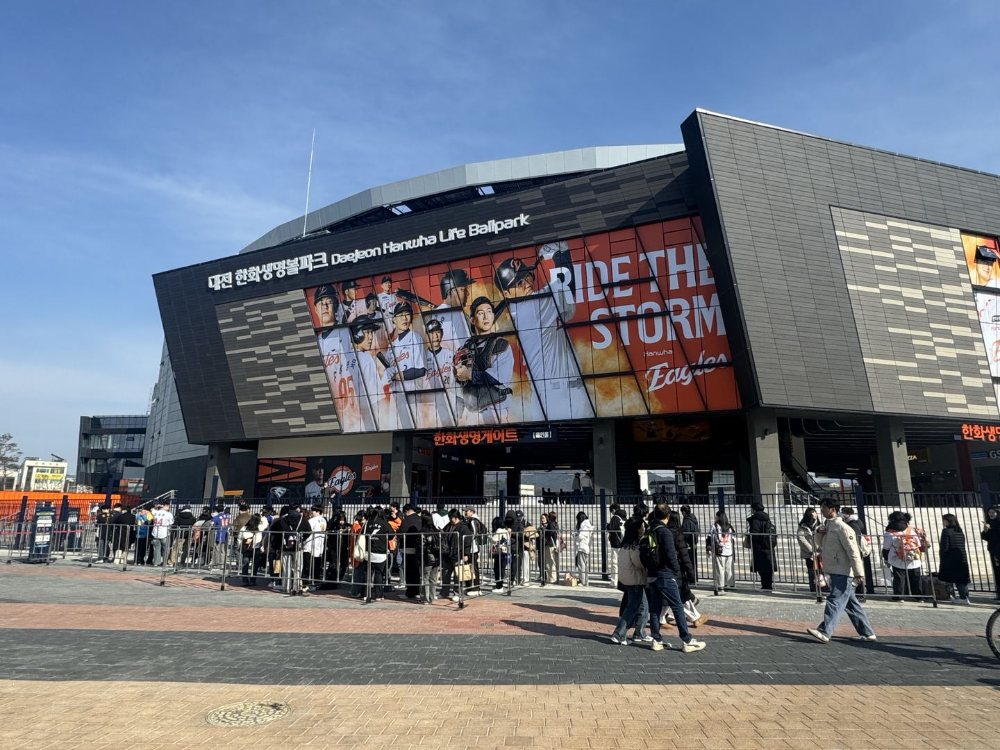

HTML5 학습
Mynotion_java
Mygithub
Myblog
나의 소개
이름 : 인 예지
별명 : 애벌레
관심기술 : Java, HTML5 등 코딩
취미 : 야구 관람, 노래 듣기
올해 재미있게 본 드라마
제목
장르
언내추럴
법의학
퍼스트 러브 하츠코이
로맨스
브러쉬 업 라이프
코미디
내가 좋아하는 프로야구 팀 - 한화
한화 이글스는 KBO 리그를 대표하는 프로야구 팀으로, 충청 지역을 연고로 하는 구단입니다.
열정적인 팬층과 끈기 있는 플레이 스타일로 유명하며, 특히 젊은 선수들을 육성하는 데 힘쓰고 있습니다.
대전 한화생명 볼파크를 홈구장으로 사용하며, 꾸준한 도전 정신으로 한국 야구 발전에 기여하고 있습니다.

지원하지 않는 웹 브라우저입니다.
이 문서는 인예지에 의해 HTML5와 CSS3 기술을 사용하여 2025년 03월 26일에 작성하였습니다.(ver 1.0)